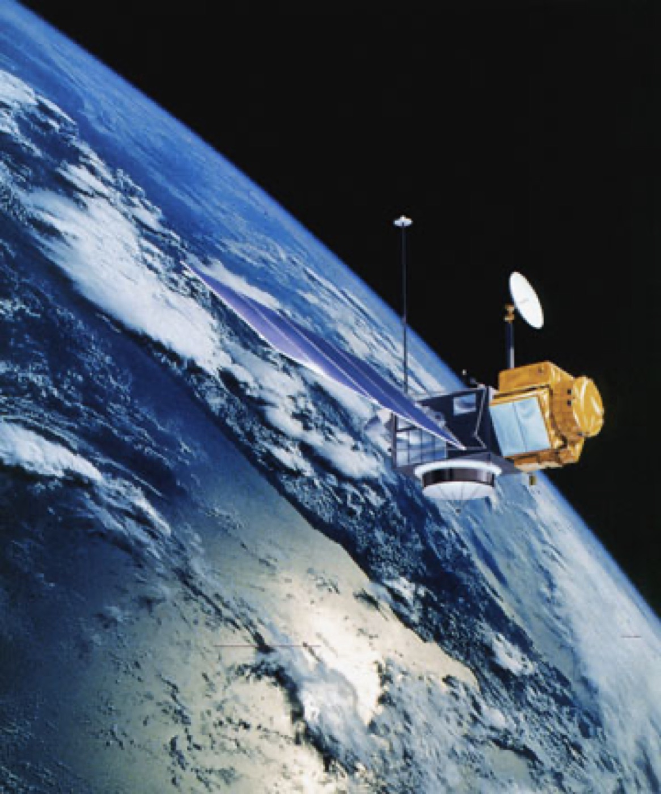
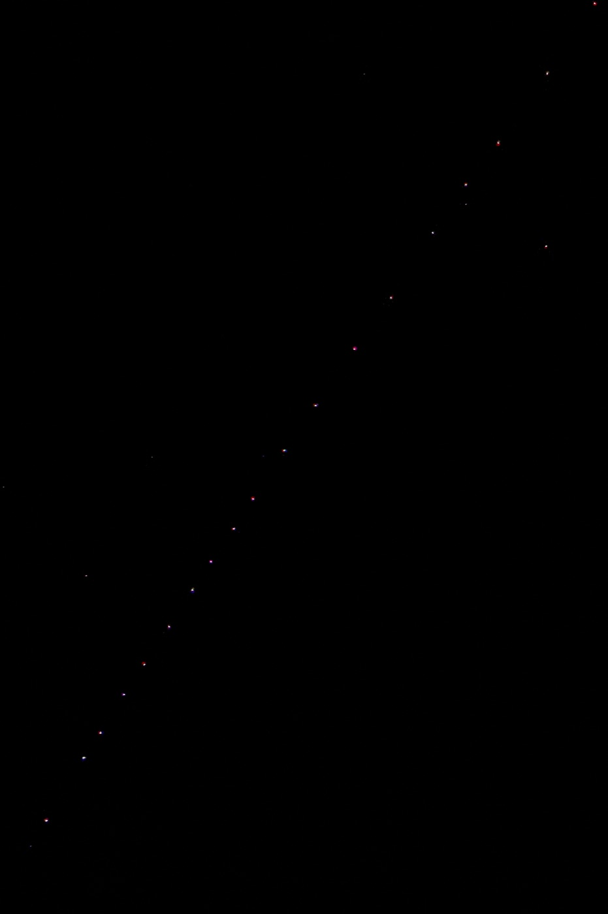

Executive Summary
위성이 궤도를 바꾼 시각을 기계가 알아서 찾아내게 하려면, 진짜 기동이 언제 있었는지 적힌 라벨이 먼저 있어야 한다. 그런데 공개된 궤도 데이터에는 그런 라벨이 드물다. 대부분은 독립적인 근거가 딸려 있지 않거나, 탐지 알고리즘이 스스로 내놓은 출력이라 정답으로 쓸 수 없다. 9월 8일 arXiv에 올라온 MAD-LEO는 그 빈자리를 겨냥한 공개 데이터셋이다.
눈에 띄는 것은 라벨을 담는 방식이다. 연구진은 미션이 직접 보고한 기동 1,134건을 라벨로 삼되, 라벨 옆 칸에 그 사건을 뒷받침하는 독립 관측이 몇 겹인지를 A·B·C 등급으로 따로 적었다. 세 관측이 모두 확보된 것은 754건이고, 나머지 380건은 한두 겹이 빈 채로 그대로 공개됐다. 뒷받침이 얇다고 해서 그 라벨을 지우지는 않았다는 것이 이 설계의 뼈대다.
등급이 낮은 쪽이 실제로 나쁜 데이터인지는 저자들이 직접 쟀다. 5절까지는 논문이 잰 것과 저자가 스스로 밝힌 유보를 따라가고, 6절에서 데이터 라벨링 일반으로 옮겨 적는 부분은 논문에 없는 이 글의 해석이다.
주요 수치
출처: Guo 외 8인, MAD-LEO: A Maneuver-Annotated Orbital Dataset for LEO Satellites with Tiered Multi-Source Evidence, arXiv:2609.08556(2026) Data Records·Technical Validation 절
1,134건
미션이 보고한 기동 라벨
측지·고도계 위성 11기, 1992년부터 2026년까지
754 / 194 / 186
증거 등급 A·B·C의 이벤트 수
세 관측 전부 / 레이저 측거 부족 / 주요 관측 하나 없음
91.8% vs 91.7%
A등급과 B등급의 3시그마 커버리지
등급이 갈려도 잴 수 있는 지표에서는 거의 같다
92.6%
따로 만들어진 목록과 겹친 비율
선행 벤치마크 742건 가운데 687건이 대응
공개 데이터의 기동 라벨은 정답 노릇을 못 한다
저궤도는 빠르게 붐비고 있다. 논문이 인용한 집계로 스페이스X는 2025년 말까지 스타링크 위성을 9,000기 넘게 올렸고, 이 회사 한 곳이 6개월 보고 기간마다 충돌 회피 기동을 수만 번 수행한다. 규모가 이쯤 되면 궤도 유지와 회피가 일상 업무가 되고, 보고되지 않은 기동 하나가 충돌 위험 평가에 쓰는 예측 궤적을 통째로 무효로 만든다.
그래서 기동을 자동으로 찾아내려는 연구는 오래됐지만, 그 방법을 학습시키고 채점할 재료가 부족하다. 가장 널리 쓰이는 공개 궤도 데이터인 TLE는 시간 해상도가 낮고 오차 정보가 없어 정밀한 기동 분석에 한계가 있다. 센티미터급 정밀 궤도 산출물은 소수의 측지·고도계 임무에만 존재한다. 많은 연구가 결국 시뮬레이션 궤적으로 돌아가는데, 시뮬레이션은 실제 운용 조건을 다 담지 못한다.
남은 라벨의 사정도 좋지 않다. 저자들이 배경 절에서 정리한 진단은 간결하다. 공개된 기동 라벨은 대부분 독립적인 근거가 없거나, 그 자체가 탐지 방법의 출력이다. 그런 라벨은 평가의 정답 노릇을 할 수 없다. 가장 가까운 선행 자료도 위성 15기의 긴 TLE 이력에 기동 시각을 붙여 놓았을 뿐, 사건마다 어떤 독립 관측이 그 시각을 받쳐 주는지는 담고 있지 않다.
미션이 직접 보고한 것만 라벨로 썼다
MAD-LEO의 라벨은 탐지 결과가 아니라 운영 기관이 발행한 기동 이력에서 왔다. 국제 DORIS 서비스가 공개하는 미션 기동 이력을 파싱해 1,134건을 뽑았고, 대상은 DORIS 수신기를 실은 측지·고도계 위성 11기다. 1992년 8월 토펙스/포세이돈의 첫 기동에서 시작해 제이슨 1·2·3호, 크라이오샛-2, HY-2A, 사랄/알티카, 센티널-3A·3B, 센티널-6A를 거쳐 가장 최근의 SWOT까지, 2026년 7월 기록이 마지막이다. 라벨 표에는 truth_status 같은 상태 칸이 있어, 이 라벨이 탐지 알고리즘이 만든 값이 아니라 미션 보고임을 기록한다.

각 기동에는 30시간짜리 분석 창이 붙는다. 보고된 시각 6시간 전부터 24시간 뒤까지로, 앞뒤가 다른 이유는 카탈로그 기록이 기동보다 늦게 따라오는 변화를 잡기 위해서다. 창을 어느 시각에 걸었는지도 표에 남는다. 1,134건 가운데 1,089건은 보고된 첫 점화 시각에 걸렸고, 나머지 45건은 그 기록이 가진 유일한 시각인 운용 종료 시각을 썼다. 반응이란 창 앞뒤로 궤도 장반경이 얼마나 달라졌는지를 미터로 잰 값이다. 이 45건의 반응 중앙값은 3.3m로 첫 점화 기준 20.7m보다 한참 작은데, 구간 단위 시각만 남긴 초기 토펙스/포세이돈 기록이 대부분이기 때문이다. 공개 라벨 어휘는 event, no_event, ignore 세 값인데 이번 릴리스에 ignore는 한 건도 없다. 유효한 UTC 시각을 정할 수 없거나 원본 기록과 충돌이 풀리지 않은 경우를 위해 남겨 둔 값이고, 여기에 한 문장이 붙는다. 증거가 부족하다는 것은 미션이 보고한 사건을 무시할 근거가 되지 않는다.
기동이 없었던 구간도 함께 만들었다. 위성마다 30시간 격자 위에서 기동 창과 겹치지 않는 구간을 골라 1,139개의 무기동 대조군을 세웠고, 그중 증거 구성을 이벤트 쪽과 맞춘 274개를 균형 평가용으로 권한다. 대조군 1,139개 가운데 14개 창은 TLE로 계산한 반응이 20m를 넘어 보고되지 않은 궤도 변화가 의심된다는 표시가 붙은 채 남아 있다. 그 가운데 7개는 2023년 초 SWOT이 궤도를 끌어올리던 시기에 걸쳐 있는데, DORIS 기동 이력이 그 기간을 담고 있지 않다. 지우는 대신 표시를 달아 두고, 검증 절에서 이 14개를 하나씩 들여다봤다.

2.1스타링크 6,785기에는 라벨을 달지 않았다
데이터셋의 두 번째 축은 스타링크다. 운영자가 공개한 예측 궤도력과 같은 기간의 카탈로그 TLE를 짝지어 위성 6,785기, 2024년 11월 26일 06시부터 30일 17시(UTC)까지 107시간을 연속으로 담았다. 예측 상태만 4,336만 개가 넘고 간격은 60초다. 규모로 보면 앞의 1,134건과 비교가 되지 않는다.

그런데 이쪽에는 라벨이 없다. 운영자가 공개하는 궤도력은 실시간 관측이 아니라 예측 궤적이어서 실제 운동과 다를 수 있고, 개별 위성의 검증된 기동 기록은 공개되지 않는다. 논문은 이 서브셋을 기동 정답으로 써서는 안 된다고 못 박고, 앞 서브셋에서 개발한 방법을 실제 운용 규모에서 시험하는 용도로 쓰라고 적었다. 라벨이 없다는 사실 자체를 데이터셋의 공개 항목으로 다룬 셈이다.
그렇다고 이 구간에 궤도 변화가 없었다고 적은 것은 아니다. 공개된 TLE 표에서 이웃한 두 시각 사이에 장반경이 100m 넘게 튀는 지점이 위성 2,909기에 걸쳐 10,498번 나타나고, 그 크기의 중앙값은 338m다. 다만 그중 57%는 고도 480km 아래 배치·전이 구간에 몰려 있어 공기 저항만으로도 비슷한 크기가 나온다는 단서가 함께 달렸다. 노라드 45184호의 경우 2024년 11월 26일 22시(UTC)에 장반경이 4.3km 내려앉아, 조용한 시기의 8시간치 감쇠인 0.28km보다 열다섯 배쯤 큰 변화가 잡혔다. 이런 자리를 본문에 적고도 라벨 칸은 비워 두었다.
같은 라벨에 A·B·C가 붙었다
1,134건은 모두 event 라벨을 달고 있지만, 각 창이 어떤 독립 관측으로 뒷받침되는지는 제각각이다. 연구진은 창 하나하나에서 세 관측원의 확보 여부를 판정했다. TLE는 창 시작 이전과 끝 이후에 카탈로그 시각이 각각 하나 이상 있어야 하고, 정밀 궤도 산출물은 창과 시간이 겹쳐야 하며, 위성레이저측거는 관측이 성겨서 창 앞뒤로 하루씩 늘린 구간에서 판정한다. 그 결과가 신뢰 등급 칸에 A·B·C로 들어간다.

| 등급 | 확보된 관측 | 기동 이벤트 | 무기동 대조군 |
|---|---|---|---|
| A | TLE · 정밀 궤도 · 레이저 측거 세 가지 모두 | 754건 | 204개 |
| B | TLE와 정밀 궤도는 있으나 레이저 측거가 부족하거나 없음 | 194건 | 83개 |
| C | 주요 관측 가운데 하나 이상이 아예 없음 | 186건 | 852개 |
공개된 1,134개 이벤트와 1,139개 무기동 대조군의 등급 구성. 대조군 가운데 274개는 이벤트 쪽 증거 구성에 맞춘 균형 평가용 부분집합이다. 출처: arXiv:2609.08556 Data Records 절 및 그림 2.
센티널-6A는 예외 처리를 받았다. 이 위성에는 완성된 정밀 궤도 산출물이 없어 일일 GNSS 추적 파일이 궤도 확보의 자리를 대신한다. 그래서 라벨 수준 분석에는 들어가되, 궤도 상태가 필요한 지표에서는 아예 빠진다. 부분적으로만 갖춰진 자료를 버리지 않고 어디까지 쓸 수 있는지를 창 단위로 적은 사례다.
신뢰 등급은 그 사건을 뒷받침하는 다중 관측이 얼마나 두꺼운지를 나타낼 뿐, 미션이 보고한 기동 라벨 자체가 얼마나 믿을 만한지를 나타내지 않는다. 저자들이 등급 정의 끝에 붙여 둔 문장이다. 라벨이 맞았는지는 등급으로 다시 판정하지 않고, 등급은 오직 근거의 두께만 기록한다.
세 관측이 다 갖춰지지 않은 창은 380개다. 그 하나하나에 어떤 원천이 빠졌는지가 기계가 읽을 수 있는 표시로 정렬 표에 들어 있다. 등급 한 글자로 뭉개지 않고 무엇이 없는지까지 남긴 것이라, 사용자는 자기 분석에 꼭 필요한 원천 기준으로 다시 거를 수 있다.
등급이 갈리는 자리는 관측 시대였다
등급을 붙여 놓았으면 그다음 질문은 하나다. 등급이 낮은 창은 실제로 품질이 낮은가. 일곱 개 검증 묶음 가운데 여섯 번째가 이 물음을 정면으로 다룬다.
궤도를 기준으로 삼는 두 지표는 정밀 궤도가 있어야 계산되므로 A와 B에서만 비교할 수 있다. 그 집합에서 두 등급은 거의 붙어 있다. 3시그마 커버리지가 91.8%(A)와 91.7%(B), 부호 일치가 96.4%와 94.9%, 주기 평균 궤도 반응의 중앙값이 22.0m와 28.0m다. 반면 모든 창에서 계산되는 TLE 반응은 등급별로 중앙값이 20.2m(A), 15.5m(B), 31.8m(C)로 움직이고, C등급 분포는 75퍼센타일이 1.87km에 이르는 두꺼운 꼬리를 단다. A등급과의 콜모고로프-스미르노프 거리는 0.30이고 p값은 3.5×10⁻¹²다. A와 B의 반응 분포도 통계적으로는 갈리지만(거리 0.13, p값 0.014), C등급 쪽과 견주면 차이의 폭이 작다.
C등급의 꼬리를 품질 저하로 읽을 수도 있겠지만, 저자들은 다른 설명을 댄다. 큰 기동은 위성을 처음 궤도에 올릴 때와 임무를 마치고 내릴 때 몰리는데, 하필 그 시기에 관측 인프라가 가장 성기다. 그래서 반응이 큰 창일수록 원천이 빠지기 쉽다. 논문이 이 묶음의 결론으로 적은 문장은 등급이 데이터 품질이 아니라 관측 시대를 가른다는 것이고, 근거는 지표를 계산할 수 있는 자리에서 B등급 창이 A등급 창처럼 행동한다는 관찰이다.
등급 구성 자체가 임무 시대를 따라 갈리기 때문에, 등급 사이 비교는 위성별로 수행했다. 여러 위성을 한데 모아 비교하면 궤도 특성과 등급이 뒤섞여 무엇이 차이를 만들었는지 알 수 없어진다. 실제로 위성 안에서 등급 사이 궤도 요소 차이를 재 보니 큰 값들은 제이슨-2의 2018년 궤도 이전, 토펙스의 1992년 초기 운용처럼 문서에 남아 있는 임무 국면과 겹쳤다. 차이가 없다는 말은 차이 검정으로 할 수 없으므로, 저자들은 공학적으로 의미 있는 허용치를 미리 정해 두고 동등성 검정을 따로 돌렸다. 궤도 경사각은 위성 안 비교 19건 중 14건에서 동등으로 판정됐고, 이심률과 고도는 38건 중 24건이 허용치를 넘었으나 넘은 자리마다 기록된 임무 국면이 겹쳤다. 넘은 폭도 장반경의 0.35%를 넘지 않는다.
이 측정 결과가 그대로 사용 지침이 됐다. 세 원천의 뒷받침이 반드시 필요한 분석이면 A등급만 쓰고, B등급은 가진 원천 위에서 정량적으로 신뢰할 만하며, C등급은 보수적으로 쓰거나 수동 검토에 돌리라는 것이다. 결과를 보고할 때 어느 서브셋과 어느 등급을 골랐는지 함께 밝히라는 조항도 따라붙는다.
남의 목록과 92.6%가 맞았다
라벨이 미션 보고라고 해서 파싱까지 옳았다는 보장은 없다. 그래서 연구진은 자기 라벨을 전혀 다른 재료로 따로 만들어진 기동 벤치마크와 맞춰 봤다. 하루의 허용 오차를 두고 대조한 결과, 벤치마크에 실린 742건 가운데 687건이 MAD-LEO에도 대응 사건을 갖는다. 92.6%다. 반대 방향으로는 MAD-LEO의 1,134건 중 687건이 벤치마크에 있는데, 벤치마크 기록이 2022년 10월에 끝나 392건은 애초에 비교 기간 밖이다. 기간 안으로 한정하면 역시 92.6%가 된다. 허용 오차를 이틀로 넓히면 709건이 맞고, 반나절로 좁히면 80건까지 줄어든다. 반나절 안쪽에서 이렇게 급격히 줄어드는 것은 두 목록의 시각이 대체로 하루씩 어긋나 있었기 때문이다.
맞춰진 쌍의 시간차는 한쪽으로 쏠려 있었다. 687쌍 가운데 582쌍이 정확히 하루 차이에 몰렸다. 이런 쏠림은 어느 한쪽의 날짜 처리가 체계적으로 어긋났다는 신호다. 저자들은 원본 IDS/DORIS 기록까지 되짚어 벤치마크 쪽 공개 날짜의 연중일 변환 차이임을 확인했고, 공개 라벨은 손대지 않았다. 불일치를 없애는 대신 원인을 끝까지 따라간 셈이다.
맞지 않은 55건도 설명이 붙었다. 19건은 반응이 5m에 못 미쳐 카탈로그 잡음 바닥에 잠겨 있고, 27건은 아카이브 경계에 놓인 C등급 창이며, 두 조건에 모두 해당하는 것이 7건이다. 무작위로 흩어진 오류가 아니라 벤치마크가 가장 놓치기 쉬운 자리에 몰려 있다는 뜻이다. 반응의 크기 분포도 같은 쪽을 가리킨다. 맞은 사건의 TLE 반응 중앙값은 13.2m인데, 기간 안에서 맞지 않은 55건은 33.4m, 기간 밖 392건은 29.4m다. 잡음 바닥에 잠긴 작은 기동과 궤도 이전급의 큰 기동 양쪽에서 벤치마크가 사건을 더 많이 놓쳤다는 말이지, MAD-LEO 쪽에 근거 없는 사건이 끼어 있다는 뜻은 아니다.
측정 장비 자체의 상태도 점검했다. 레이저 측거 관측이 충분히 촘촘한 542개 창에서 기동 전후 정밀도 변화의 중앙값은 2.6mm였고, 이 장비의 전형적인 정밀도는 4mm에서 14mm 사이다. 기동을 보고한 자리에서 계측 품질이 흔들리지 않았다는 확인이다. 레이저로 잰 거리를 정밀 궤도에서 계산한 거리와 맞대 보기도 했다. 창 양쪽에 관측이 세 번 이상 있는 296개 창에서 기동 전후로 잔차 중앙값이 옮겨 간 폭은 0.23m다. 여기서 잔차 RMS가 1km를 넘은 창 4개는 지우지 않고 원인까지 적어 공개했는데, 시각 표기가 어긋난 것으로 보이는 제이슨-1의 창, 여러 날에 걸친 궤도 열화가 기록된 제이슨-3의 창, 아카이브 경계에 놓인 크라이오샛-2와 토펙스의 창이다. 반응의 크기도 기동 창과 조용한 창을 갈라 준다. 이벤트의 TLE 반응 중앙값이 20.3m인데 무기동 대조군은 1.1m다.
우리 데이터에도 근거를 적는 칸이 있는가
여기까지가 논문이다. 데이터를 다루는 쪽에서 보면 익숙한 결핍이 하나 보인다. 라벨은 대개 맞다와 틀리다 두 값으로만 남는다. 검수자가 몇 명 봤는지, 서로 다른 계측 두 대가 같은 답을 냈는지, 아니면 한 사람이 화면 한 번 보고 넘긴 것인지는 라벨링 과정 어딘가에서 사라진다. 그리고 모델은 두껍게 확인된 라벨과 얇게 확인된 라벨을 같은 무게로 학습한다.
MAD-LEO가 택한 방식은 그 정보를 스키마 안에 붙잡아 두는 것이다. 옮겨 볼 만한 조각은 세 가지다.
- 라벨 칸과 근거 칸을 분리한다. 등급은 라벨의 참·거짓을 다시 묻지 않는다. 그 라벨을 받쳐 준 확인이 셋인지 하나인지만 적는다. 두 축이 섞이지 않아야 나중에 한쪽만 갱신할 수 있다.
- 빠진 근거를 지우지 말고 표시한다. 세 원천이 다 갖춰지지 않은 380개 창에는 무엇이 왜 없는지가 기계가 읽는 형식으로 남아 있다. 근거가 얇다는 이유로 행을 버리면, 그 행이 왜 얇았는지도 함께 사라진다.
- 등급별 사용법을 데이터와 함께 배포한다. 논문은 A만 쓰는 쪽을 엄격, A와 B를 함께 쓰는 쪽을 완화, 전부를 훑는 쪽을 감사(監査)라 이름 붙이고, 결과를 보고할 때 어느 쪽을 골랐는지 밝히라고 적었다. 만든 쪽이 먼저 이름을 붙여 두면 쓰는 쪽이 매번 임의로 정하지 않아도 된다.
이 설계가 우주 궤도에서 나온 데는 이유가 있다. 위성 하나의 과거 기동을 다시 확인하려면 레이저 측거망과 정밀 궤도 산출 같은 소수 임무에만 있는 장비가 필요하고, 지나간 시각은 다시 잴 수 없다. 재측정이 불가능하면 라벨을 버리든지, 근거의 두께를 남기든지 둘 중 하나다. 제조 라인의 비전 검사에서 이미 출하된 제품, 판독 의견이 갈린 의료 영상처럼 재확인 비용이 큰 현장도 같은 갈림길에 선다.
물론 이 데이터셋을 그대로 쓸 때의 경계도 논문에 적혀 있다. 라벨에 담긴 기동은 초당 센티미터 수준의 궤도 유지가 대부분이라, 여기서 학습한 방법이 충돌 회피급의 큰 기동에 통하는지는 이번 릴리스에서 검증되지 않았다. 반응 지표가 장반경을 기준으로 하므로 궤도면만 기울이는 기동에는 둔감하다는 점도 논문이 미리 밝힌다. 근거를 등급으로 남기는 설계와 별개로, 라벨이 덮는 범위를 스스로 좁혀 적은 것이다.
Editor's Note
페블러스가 데이터 품질을 진단할 때 자주 마주치는 상황이 라벨은 있는데 그 라벨이 어떻게 붙었는지는 아무도 모르는 경우다. 정확도를 다시 재는 일은 비싸고, 비싼 일은 미뤄진다. 그럴 때 우리가 먼저 물어보는 것은 지금 라벨을 몇 명이 어떤 근거로 확인했는지가 데이터 안에 남아 있느냐다. 남아 있으면 나중에 고를 수 있고, 남아 있지 않으면 전부를 다시 재는 수밖에 없다.
여기까지 읽어 주신 데 감사드린다. 원문은 arXiv:2609.08556에서 볼 수 있고, 데이터셋은 Figshare에 CC BY 4.0으로 40개 파일 약 4.3GB 규모로 올라가 있다. 구축 파이프라인은 github.com/sjtugzx/madLEO에 공개됐다. 라벨 옆에 근거를 적는 칸을 이미 운영하는 팀이 있다면 어떤 단위로 나누었는지 나눠 주시면 좋겠다.